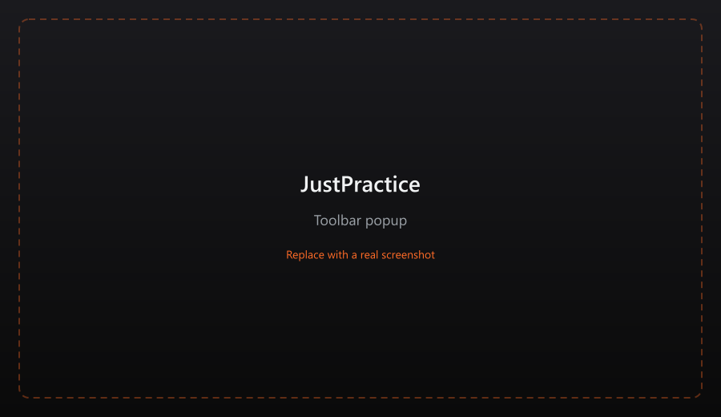
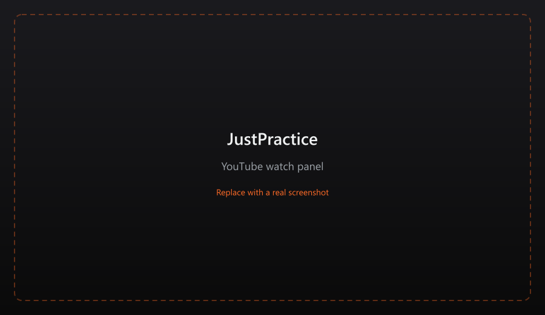
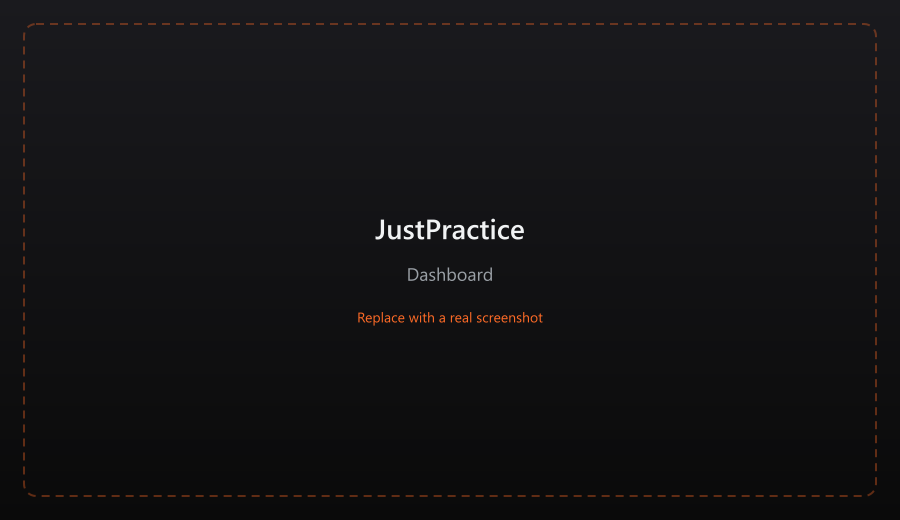

Practice timer
Counts watch time while YouTube plays (visible, focused tab). Daily goals and streaks on the dashboard.
Track YouTube practice time. Build a local library. Tag videos with JLPT, CEFR, or custom levels.
Counts watch time while YouTube plays (visible, focused tab). Daily goals and streaks on the dashboard.
Save videos from YouTube with difficulty tags (JLPT N5–N1, CEFR A1–C2, or your own custom list).
Stats, heatmaps, Today path, achievements, and settings — open from the toolbar popup or extension options.
All data stays in chrome.storage.local on your device. Export or import a
JSON backup anytime.




Short walkthrough: saving videos and using the panel.
Chrome does not support one-click install outside the Web Store. Follow these steps to load the extension from a release zip:
justpractice-*.zip from
Releases.
justpractice-1.0.0/).
You should see manifest.json at the top level.
chrome://extensions.chrome://extensions.
git clone https://github.com/thepoppfish/JustPractice.git
cd JustPractice
npm install
npm run build
Then load the dist/ folder as an unpacked extension.